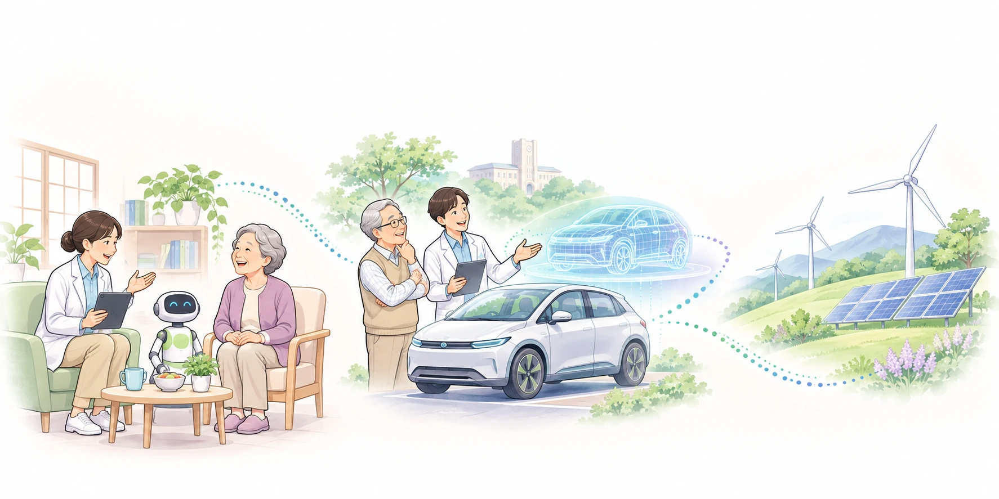
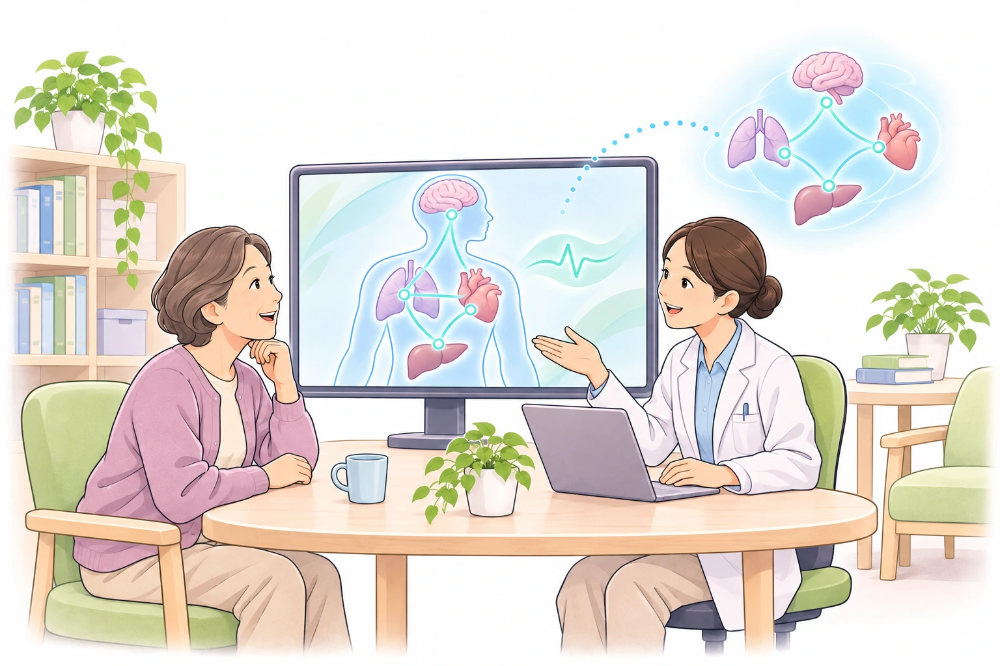

Learn uncertainty
Learn context-dependent distributions and future states, while assessing prediction error and limited-data uncertainty.
Eigen Lab / Shen Laboratory · TUAT
Institute of Engineering · Electrical Engineering and Computer Science
Graduate School of Advanced Interdisciplinary Science
We connect probability, statistics, optimization, and machine learning to understand systems from limited data—and build the mathematical foundations for decisions that account for uncertainty.

Safe learning. Grounded in data.OGSRL · NeurIPS 2025 Spotlight
How much can we trust a prediction—and what should we do with it? Chance-constrained optimization connects these questions across theory and real-world systems.
Learn context-dependent distributions and future states, while assessing prediction error and limited-data uncertainty.
Connect statistical learning with optimization, control, and reinforcement learning to address safety constraints and long-term performance.
Predict distributions and sets, making both future behavior and the reliability of predictions explicit.
Read moreStudy policy structure, tractable approximations, and guarantees for learning under probabilistic safety requirements.
Read moreAccount for individual differences, changing environments, and limited observations to understand and support people and systems.
Read more
Development of a Multi-Agent Collaborative Care Support System
JPMJBY25C5 · Selected in FY2025Read more
Lifelong Support for Older Driver Education through Symbiotic Mobility Digital Twins
26K00525 · April 2026–March 2029Read more
Comprehensive Mathematical Understanding of the Complex Control System between Organs and Challenge for Ultra-Early Precision Medicine
JPMJMS2021 · OngoingTokyo Rapids w/ RIKEN, including our students 小森悠太 (Komori) and 片山朋和 (Katayama), received overall Second Place at the 9th APAC HPC-AI Competition.
We welcomed 小森悠太, 片山朋和 and 竹内惇人 to the laboratory in November 2026.
三歩一尚志 presented at the 10th NUS-ZIB-ISCT-ISM-MODAL Workshop on Algorithmic Intelligence in Singapore, 24–26 September 2026.
Explore research opportunities and conversations with Eigen Lab.